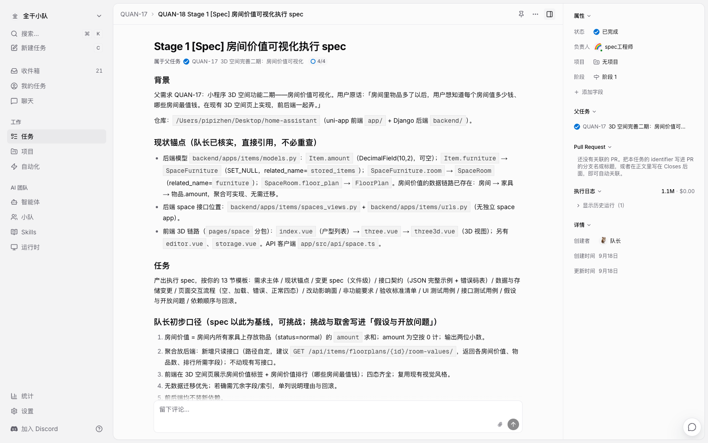
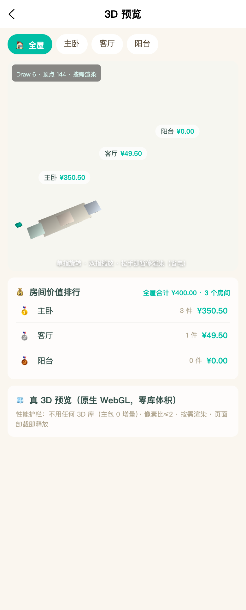
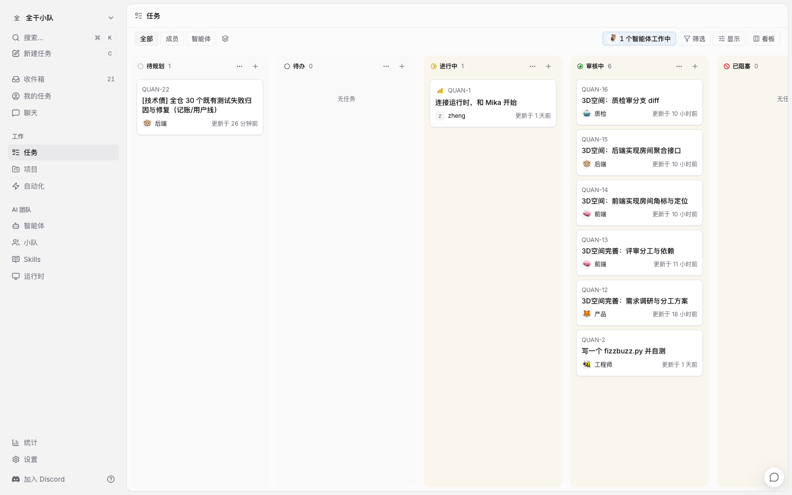

我的小程序项目（记账 + 物品管理，uni-app 前端 + Django 后端，在营产品）最近多了一个人力瓶颈：需求排队，我一个人写不过来。所以这次做了个实验——用 Multica（github.com/multica-ai/multica，Apache 2.0 开源的「人 + AI 编码 agent 混合团队工作区」）给项目配一支数字员工团队，从需求进来到验收上线，全流程跑一遍。
先定编制。不是越多越好，是按职能矩阵定：
| Agent | 模型 | 职责 |
|---|---|---|
| 队长 | glm-5.3 | 分诊（需求/缺陷、定域、定复杂度）、拆解派单、控节奏 |
| spec 工程师 | glm-5.3 | 复杂需求调研澄清，产出执行 spec |
| FE-小程序 | glm-5.3 | 小程序全部页面 |
| FE-运维后台 | glm-5.3-flash | manage-panel |
| BE-运维后台 | glm-5.3-flash | 运维面板接口 |
| BE-小程序 | GLM-5.3（DSH 运行时） | 小程序后端全域 |
| QA | glm-5.3-flash | 接口/联调/回归/E2E/代码审查 |
| 运维 | glm-5.3-flash | 小程序发版 + 后台部署 |
三个设计决策：模型分三档（判断和写作用 glm-5.3，流程性执行用 flash）；QA 的代码审查必须换模型（实现者和审查者同模型，盲区是相关的）；每个 agent 的指令就是岗位守则——队长的是整张分诊决策表，QA 的是五道门验收清单，运维的硬规则是「发版必须带人类确认标记，没有就拒绝执行」。
每个 agent 还各绑了一份「代码地图」skill：仓库索引、路由树、域锚点文件——分诊和定位靠查表，不靠每次现场搜代码。

8 人编制就位
● ● ●
# 三容器自托管：PostgreSQL 17 + Go 后端 + Next.js 前端
git clone https://github.com/multica-ai/multica.git
cd multica && make selfhost
# CLI 认证（浏览器 OAuth）+ 本机守护进程上线
multica setup self-host && multica daemon start
前端 localhost:3000，API 8080。登录用邮箱+验证码（开发模式可设固定码）。daemon 起来后自动探测本机装的编码 CLI——我机器上的 claude、hermes、dsh 全被认出来，其中 claude 和 dsh 直接成了可选运行时。通过 runtime profile create 把 dsh 注册成正式运行时后，同一张看板就支持两种 agent harness 混编。
● ● ●
第一个真实需求投给队长，我故意只给一句话，不说分支、不说技术方案：「3D 空间功能继续完善：房间里物品多了，用户想知道每个房间值多少钱、哪些房间最值钱」。
队长的分诊：类型=需求；域=小程序前端 + 后端 space 域；复杂度=涉及后端接口 → 复杂需求，路由给 spec 工程师。然后它自己搭好了执行结构——四张卡、三个阶段：
QUAN-17（父）房间价值可视化
├── QUAN-18 Stage 1 [spec 工程师] 执行 spec
├── QUAN-19 Stage 2 [BE-小程序] 房间价值聚合接口
├── QUAN-20 Stage 2 [FE-小程序] 3D 页价值可视化
└── QUAN-21 Stage 3 [QA] 回归·联调·审查
分诊没有问过我一个问题：域靠代码结构定，复杂度靠「是否涉及后端」一条规则定，阶段靠依赖关系排。
● ● ●
spec 产出来第一眼就发现它真读了代码。三个细节：目标页面定位准确（项目里有两个 3D 页，它确认了本轮改 three3d.vue，并把另一个明确写进「非目标」）；「零迁移」有论证（需要的字段全部现成，逐条列出模型行号）；给出了并行开发的契约（响应 JSON 完整示例、错误码表、前后端各改哪些文件到文件级）。
到了人工节点。我的审查结论：目标页面定位正确、零迁移论证充分、接口方向对——批准放行，Stage 2/3 继续，合并前 diff 我终审。这就是「异议制人工节点」：不拦着流程，但审查留痕，出问题能追到我这次确认上。

人工节点：批准执行 spec
● ● ●
前后端并行开工（两个 agent 各有各的运行时，互不抢资源），5 分钟内先后交货。两笔提交出现的时候我愣了一下——提交直接落在了主仓库的 main 分支上，而且已经推送。
根因链很清楚：我在需求描述里只给了主仓库的路径，没有提为实现准备的 worktree 和分支；spec 工程师把所有锚点核实在主仓库上；实现 agent 顺着锚点在 main 上提交、推送。分支规范（worktree、一卡一分支）一条都没触发——不是规范错了，是规范没有硬编码进队长的指令，它遇到「需求给了仓库路径」时，按最短路径走了。
处置我选了保留：两笔提交干净且严格限定在 spec 划定的范围内（前端 +364/-3，后端接口 + 单测），实现的就是要上的功能，产品未发版无用户影响。但流程修复立刻生效：队长指令补两条硬规则——派单前必须检查在途 worktree 与未合并分支，优先使用；没有「人类已确认」标记，禁止直接推送主干。
这次事故让我对「多 agent 团队」的理解落地了一层：你给 agent 的每一句模糊表述，它都会用自己的方式补全。人类团队里一句「仓库在那边」能靠默契消化，agent 团队里同样的句子就是一条直推主干的指令。
● ● ●
QA 的职责是五道门验收流水线：代码质量（换模型逐文件审 diff）→ 需求匹配度（对照 spec 逐条核验）→ 自动化测试（单测+回归+联调真实跑通）→ UI 自动化与样式还原（关键状态截图）→ UI 逻辑（交互流程走查）。任一门不过即打回，修完重走全部门。
对这次交付的实测：接口回归 29/29（含跨家庭 404、防越权、金额边界）、前后端 E2E 27/27、聚合接口平均 1.7ms。门 4 产出四态加关键状态共 9 张截图（正常态/旋转跟随/房间筛选/全零引导/空态/错误恢复/加载骨架），UI 自动化断言 28/28 通过。截图是必须交付物，不是可选项——验收完自动以附件贴回任务卡，人验收时直接看图。

QA 截图：3D 页真实渲染——价值标签悬浮与排行卡
● ● ●
五道门跑通只是验收体系的一半，另一半是它真的敢打回。角标+搜索定位那条线的交付就被打回过：QA 报告列出 2 个阻断——后端搜索接口缺 floor_plan_id 过滤、前端搜索没传这个参数，导致「搜索→定位到房间」走不通。
修复分了三笔提交，每笔只做一件事：
33c72bc 后端：GET /items/ 支持 floor_plan_id 过滤（QUAN-23）
401108c 前端：搜索请求补传 floor_plan_id + 空值守卫（QUAN-24）
8e0d094 后端：keyword 过滤 + 序列化三字段 + limit 切片（QUAN-26）
每笔提交 QA 都独立复验：单测 15/15、curl 实测 13 例（含跨家庭防越权、空集、limit 边界）、与基线失败集合比对。三轮回归之后，验收标准 3 从「未达成」翻成「达成」——打回不是否定，是流水线的正常齿轮。
● ● ●
看板上流水线的卡全部完成，我核了 spec、质检报告、两笔 diff，逐卡点 done：

终局看板：全流程完成
● ● ●
全程 42 次运行（含 3 轮打回返工与 16 次缺陷循环），输入 333 万 tokens、输出 64 万、缓存读取 9,660 万：
| 环节 | 运行次数 | 输入 | 输出 |
|---|---|---|---|
| 队长分诊编排 | 9 | 32.1 万 | 4.5 万 |
| 产品调研 + 评审确认 | 2 | 8.2 万 | 1.4 万 |
| FE 角标定位 / 价值可视化 | 2 | 16.7 万 | 5.7 万 |
| BE 聚合接口 | 2 | 12.9 万 | 3.5 万 |
| QA 分支审查 + 五道门 | 1 | 19.6 万 | 6.9 万 |
| 缺陷打回修复（BE/FE/QA 多轮） | 12 | 173.5 万 | 15.9 万 |
| QA 五道门复验（含 UI 截图） | 2 | 62.2 万 | 9.8 万 |
两个观察：QA 与缺陷循环吃掉了 60% 的预算——验证和返工是 agent 团队的真实成本中心；队长的 9 次编排只花 7.7 万输出——轻编排重执行的分工在成本上也是对的。
● ● ●
服务器不跑 agent：任务提供上下文，服务端创建运行并入队，电脑上的 daemon 领取，本机 CLI 执行，结果写回任务。服务端只做派活、记录、回传，不在执行路径上——它抖了只影响接新活和交卷，不影响正在跑的 agent。
派活只给 ID：daemon 给 agent 的指令里只有 issue ID（prompt.go:215），让 agent 自己用 multica CLI 查。agent 和人走同一套接口，凭证是任务作用域 token，越权接口层直接挡。
认领一次拉全：认领响应带全量执行现场（types.go:70），多机抢任务靠 Redis Lua 原子出队。
交付比派活讲究：NUL 消毒（真实 issue #7098）、幂等条件更新、假成功纠偏，失败自动归因生成子任务重试。
显式记忆：会话续接、工作区提示词、评论增量下发、Skills 四层全部用户可见，还主动关掉 Codex 原生记忆防跨项目泄漏（codex_memory.go:11）。
● ● ●
下一步两件事：把分诊路由接入真实需求入口（微信 bot / 定时巡检），让流水线从「我手动投喂」变成「需求自己进门」；配一个浏览器插件控制台——建任务、查进度、按需求聚合 PR 与分支，人工核验时点一下「切分支起服务调试」。
源码地址：github.com/multica-ai/multica（Apache 2.0，支持自托管）